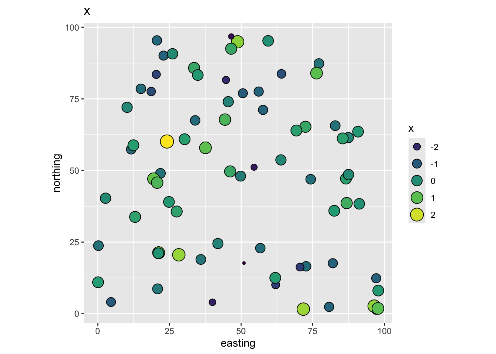
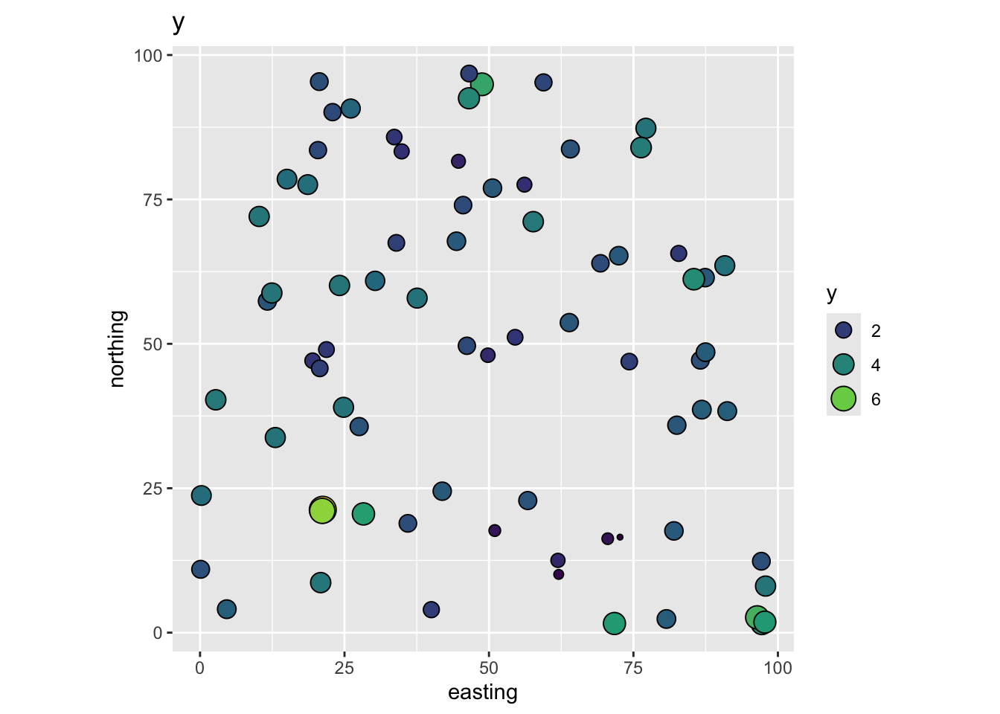
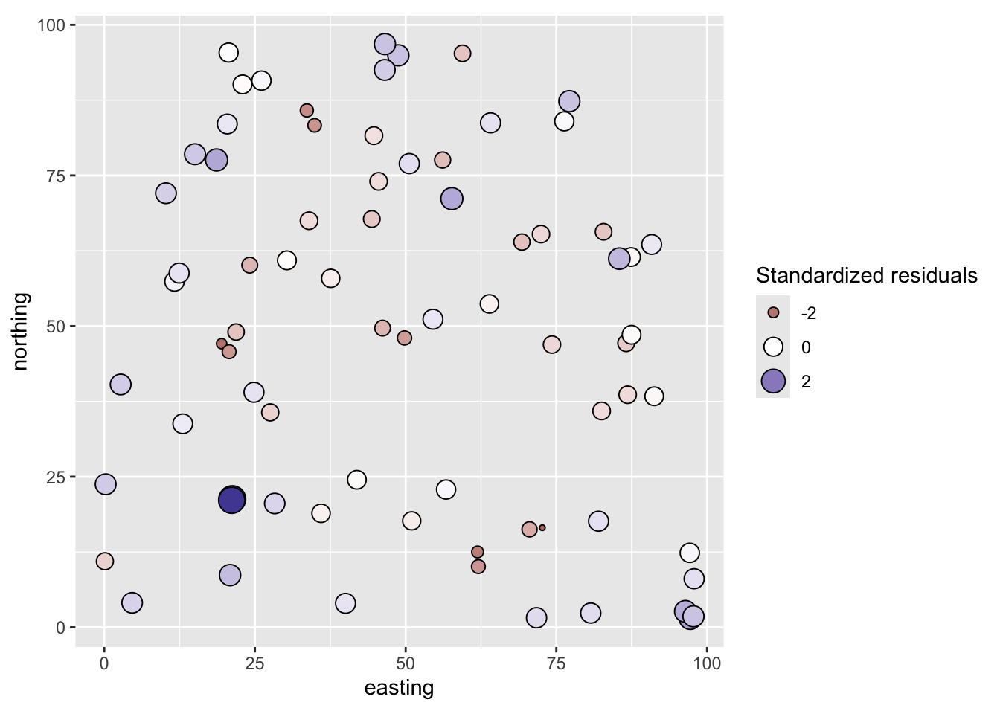
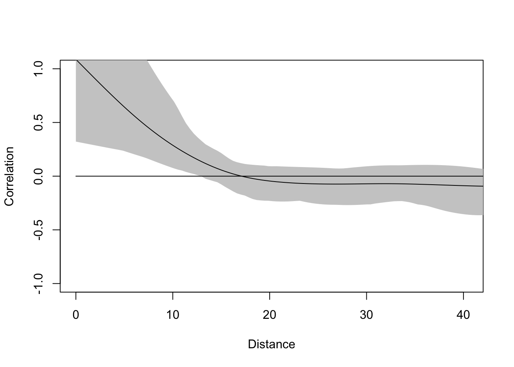
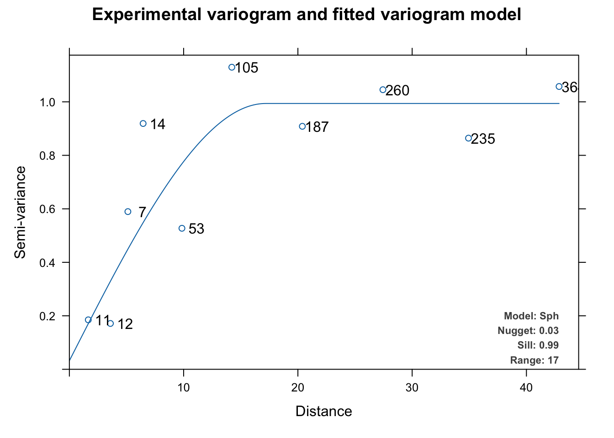
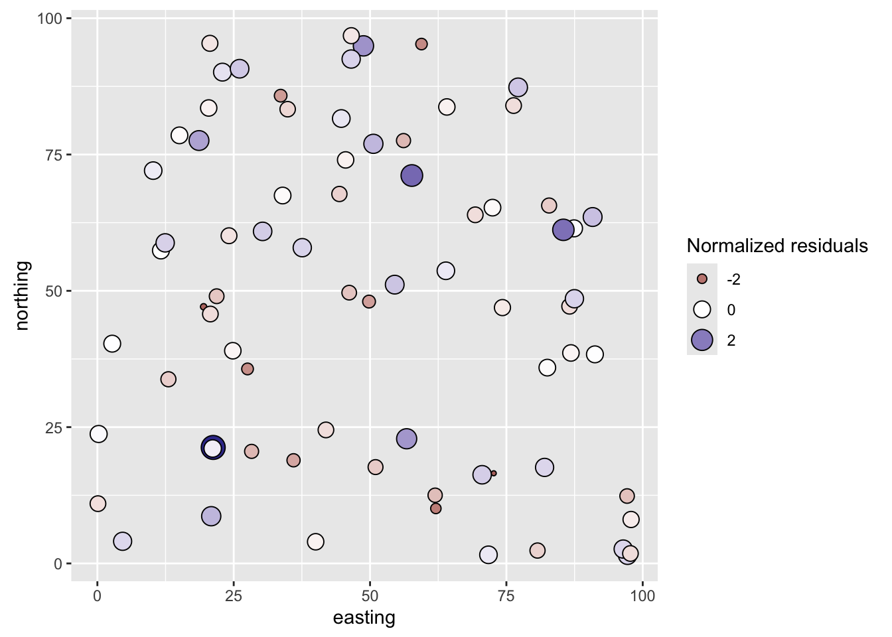
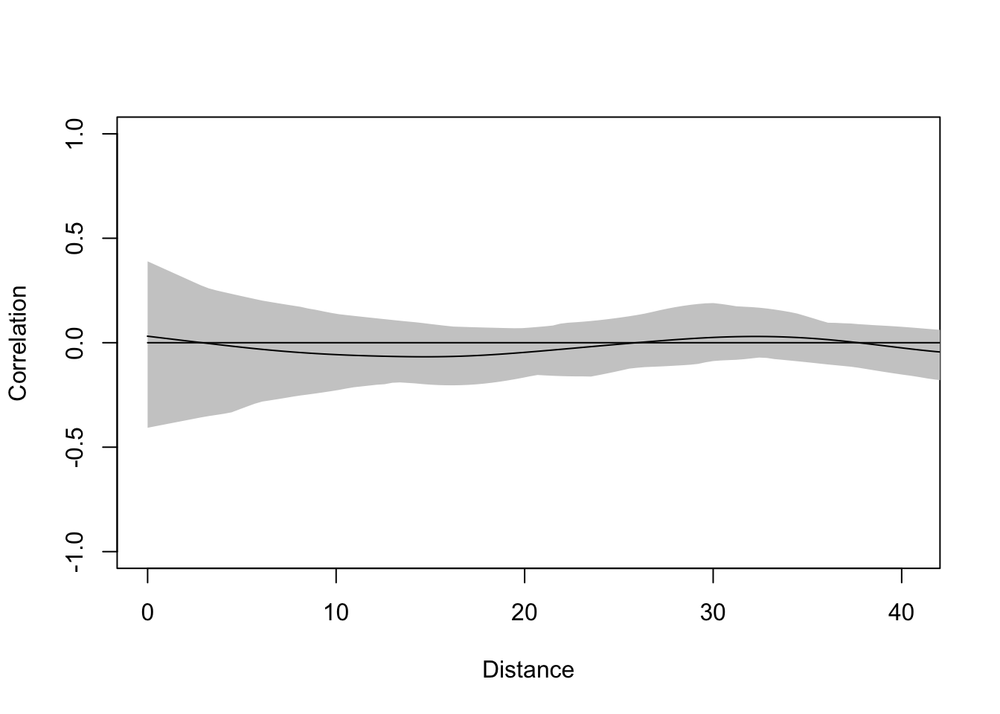

10 Regression: GLS with Autocorrelated Residuals
10.1 Big Idea
In the big picture, identifying spatial patterns in data lets us understand process. In practical terms, standard ordinary least squares regression can be problematic with spatial data but there are other approaches that are useful.
10.2 Reading
Dormann et al. (2007) provide a review of several methods for accounting for spatial structure in species distribution data. The paper does a good job of explaining the big picture on why space is important in a regression context. Much of the paper uses matrix notation that you might not be familiar with and the mathematical details are not critical. In this module, we will focus on using generalized least squares (GLS). For this paper, I suggest reading the intro and then skimming the rest. Pay attention to the first part of section three on on spatial models based on GLS regression but don’t sweat the details more than you want to.
Keitt et al. (2002) is also worth a heavy skim. They don’t use GLS in their approach but do show how spatial methods outperform standard methods in a few case studies. Focus on the implications rather than the methods in that paper. I worked with Tim Keitt when I was a masters student and my goodness, he is a smarty pants. It’s worth reading anything he’s written.
Dormann, C F et al. (2007) Methods to account for spatial autocorrelation in the analysis of species distributional data: a review. Ecography 30: 609-628, doi: 10.1111/j.2007.0906-7590.05171.x.
Keitt T H et al. (2002) Accounting for Spatial Pattern When Modeling Organism-Environment Interactions Ecography 25: 616-625.
10.3 Packages
You’ll want to install the packages below. We are going to fit a linear model using GLS as opposed to ordinary least squares and thus need nlme(Pinheiro, Bates, and R Core Team 2025) as well as some of our other spatial standards.
10.4 Regression
A very common situation with environmental data is to want to do an ordinary least squares (OLS) regression using spatial data. If your data are explicitly spatial, you are doing spatial regression. And that has different pitfalls than standard regression.
The biggest issue is that if the residuals (errors) are autocorrelated, you have violated the assumption of independence. What does this mean? Well, the standard errors on the coefficient estimates tend to be underestimated (and the t-scores overestimated) when autocorrelation of the errors at short distances are positive. This means that any statistical inference could be wrong, e.g., the the p-values from a t-test will be artificially low. But despair not! If we take the the spatial structure of the errors into account we can usually still model the association between \(x\) and \(y\) effectively.
Is this a little opaque? Let’s make up an example. Let’s say you wanted to build a model of tree growth as a function of plant-available nitrogen in the soil. Your idea is that trees with more nitrogen will grow better. So, you make a nice linear model \(y=\beta_0 + \beta_1 x + \epsilon\) where \(y\) is the basal area increment of the tree, \(\beta_0\) is the intercept and \(\beta_1\) is the coefficient on the variable \(x\) which is plant-available N, and \(\epsilon\) is the residual. You have a gorgeous data set with 75 trees mapped which makes this a spatial regression: \(y_i=\beta_0 + \beta_1 x_i + \epsilon_i\) where \(i\) is the location specified by northing and easting coordinates. You run an OLS regression and get a positive slope and a t-test says that your model has skill (good \(R^2\), \(p<0.05\), etc). Great – you fire off a letter to Nature, or write your thesis, or go dump some salmon carcasses on the trees, or just bathe in the satisfaction of a job well done. But of course your model won’t fit perfectly so you’ll have residuals or errors from the model (\(\epsilon\)). Now, if those residuals are not independent and identically distributed (iid), you have violated the assumptions of the OLS regression. The coefficients might be inefficiently estimated, standard errors might be wrong, the p-values might be inflated. Alas. The classic reason that residuals are not ~iid in spatial data is because they are not independent and that means autocorrelation.
In general here is a good approach when dealing with spatial data in a regression.
Start by assuming iid (e.g., doing an ordinary least squares regression).
Look at the spatial structure of the residuals with Moran’s I.
If the residuals look clean then carry on. Note that it’s OK for the variable \(y\) or \(x\) to be autocorrelated – watch the residuals. If the residuals have spatial structure, quantify the degree of spatial structure using Moran’s I. Spatial structure might or might not be a problem. But if your life/thesis/soul depends on having a clean model you’ll want to deal with it.
Fit a variogram to the residuals. We can use this information to fit a GLS model where we specify the spatial structure in the error term using a variogram model fit from the the semivariance on the residuals.
10.5 GLS and OLS
We have all been taught OLS. OLS is a method for estimating the unknown parameters in a linear regression model – e.g., estimating the intercept (\(\beta_0\)) and slope (\(\beta_1\)) of a line in the formula \(y=\beta_0 + \beta_1x\). OLS works by choosing the parameters of a linear function by minimizing the sum of the squares of the differences between the observed dependent variable (\(y\)) in the given data set and those predicted by the linear function (e.g., \(y=\beta_0 + \beta_1x\) in the example above, but note that you can have more than one independent variable in a multiple regression). If conditions like homoscedasticty, independence, and normality are met, the OLS estimators are optimal (often called BLUE – Best Linear Unbiased Estimators). In other words, when the assumptions are met, OLS works. OLS has a nice property that teaching it is relatively simple and can be done without a bunch of matrix algebra. You can calculate the sum of squares by hand and in intro stats courses we relate OLS to simpler concepts like correlation.
The other common least squares approach is generalized least squares (GLS). GLS is a method of estimation of a linear process which accounts for heteroscedasticity and structure in the error term. If OLS is used for homoscedastic regressions (i.e. \(y\) has the same variance for each \(x\)), GLS is used for heteroscedastic regression (different variances). GLS can also be used for correlated (non-independent) residuals. The theory with GLS is that the residuals can be transformed so that the variances are equal and uncorrelated. We will let the math happen behind the scene, but you can think of it like this: OLS minimizes the sum of the squares of the differences between the observed dependent variable and GLS minimizes distances relative to the covariance matrix of the residuals. The calculation for GLS is more involved than for OLS (the GLS function is fit from restricted maximum likelihood rather than sums of squares) and relies on specifying the nature of the errors (i.e., how are they not normal and independent?). For those reasons, and mostly from lack of time, GLS tends not to be taught alongside OLS. We typically encounter it when we learn mixed effects modeling.
In spatial and time-series analysis, the error term is often autocorrelated. So, if the important difference between OLS and GLS is the assumptions made about the error term of the model, we can use GLS to allow for autocorrelated errors and avoid having inefficient estimation of the unknown parameters in a linear model. Why not always use GLS over OLS?. It’s a good question and I think of it along the lines of the KISS principle. If you meet the OLS assumptions, use it. If you don’t then look for alternatives like GLS.
10.6 Toy Example
Here is our goal: We will create a variable y that is a function of x but will have spatially autocorrelated noise (\(\epsilon\)). We will regress y on x and find to our horror that the residuals from this model are not iid. We will then apply a GLS model with an appropriate correlation structure and feel good about ourselves.
10.6.1 Data
First, I’m going to make some autocorrelated noise \(\epsilon\). This bit of code here is not for the faint of heart. You can hum your way through this and know that at the end the variable \(\epsilon\) will be spatially autocorrelated. You can follow the code below if you are interested in the process but it’s significantly more complicated that we usually do in this class. We we are doing is making a variable \(\epsilon\) that has spatial autocorrelation \(\rho\) in the form \(\epsilon = \rho W + e\) where \(W\) is a weights matrix following an inverse distance weights process and \(e\) is random noise (\(N(0,1)\)). We make n random points following complete spatial randomness (using runif) and then do some tedious calculations to determine how each points is linked based their distances (dnearneigh and nbdists). Based on the distances we make a weights matrix following IDW with power p. We get the spatial autocorrelation generating operator for \(\rho\) via the weights matrix and then multiply by some white noise (rnorm) to get \(\epsilon\). The details on this last step involve some matrix inversions that we don’t need to unpack.
# We will do n points
n <- 75
# CSR. Our mapped points.
easting <- runif(n,0,100)
northing <- runif(n,0,100)
points <- cbind(easting,northing)
# Generate the spatially autocorrelated error term, epsilon.
# Build neighbor objects with an inclusive distance threshold
dnb <- dnearneigh(x = points, d1 = 0, d2 = 150)
dsts <- nbdists(nb = dnb, coords = points)
# And follow an IDW process
p <- 2.25 # IDW power
idw <- lapply(dsts, function(x) x^-p)
# Weights matrix as a list
wList <- nb2listw(neighbours = dnb, glist=idw, style="W")
# Compute SAR generating operator via a weights matrix
inv <- spatialreg::invIrW(x = wList, rho = 0.75)
# Calculate epsilon and rescale as z scores
epsilon <- inv %*% rnorm(n)
epsilon <- scale(epsilon[,1])[,1]OK, by great magic we now have a variable that is from random spatial points but has spatially autocorrelated values (that follow an IDW process). If you want, you can imagine that \(\epsilon\) is a variable in nature that is spatially autocorrelated (maybe soil moisture availability following the tree example above) that we didn’t measure. How intense is the spatial autocorrelation? Think \(\rho\) following an IDW process. E.g.,
##
## Moran I test under randomisation
##
## data: epsilon
## weights: wList
##
## Moran I statistic standard deviate = 8.4772, p-value < 2.2e-16
## alternative hypothesis: greater
## sample estimates:
## Moran I statistic Expectation Variance
## 0.723530049 -0.013513514 0.007559259We are going to use \(\epsilon\) as the error term in a model. Oh, I’ll use the terms “errors” and “residuals” interchangeably throughout these notes.
We’ll now make x and then \(y=\beta_0 + \beta_1(x) + \epsilon\). We will run a linear model and look at the residuals of that model using Moran’s I.
# Generate x as noise.
x <- rnorm(n)
# Generate y as a function of x and epsilon (which is spatially autocorrelated)
B0 <- 3 # intercept
B1 <- 0.5 # slope
y <- B0 + B1*x + epsilon
# Make a data.frame
dat <- data.frame(easting,northing,y,x)So in our thought experiment here are the data. The independent variable x:
ggplot(data = dat, mapping = aes(x=easting,y=northing,
size=x, fill=x)) +
geom_point(shape=21) +scale_fill_viridis_c() +
guides(fill=guide_legend(), size = guide_legend()) +
coord_fixed() +
ggtitle("x")
And the dependent variable y:
ggplot(data = dat, mapping = aes(x=easting,y=northing,
size=y, fill=y)) +
geom_point(shape=21) + scale_fill_viridis_c() +
guides(fill=guide_legend(), size = guide_legend()) +
coord_fixed() + ggtitle("y")
10.6.2 Analysis
Following our imagined example above we have a dependent variable y (tree growth) that we want to model using an independent variable x (nitrogen). The points (trees) are mapped using coordinates (easting and northing) and we can imagine those are in meters. Because we made up these data we know that the residual term on this model is autocorrelated noise (epsilon). If you don’t like having the errors be something theoretical in your head, you can imagine that this term is mostly some variable we haven’t measured that might provide explanatory power (e.g., a topographic variable relating to soil moisture availability).
We will start by assuming epsilon follows an iid process (e.g., \(N(0,1)\)) and we will fit a model with uncorrelated errors. E.g., here we use gls but this gives the same info as lm would because gls assumes iid errors unless told otherwise.
## Generalized least squares fit by REML
## Model: y ~ x
## Data: dat
## AIC BIC logLik
## 220.5108 227.3822 -107.2554
##
## Coefficients:
## Value Std.Error t-value p-value
## (Intercept) 3.0279132 0.1159938 26.104090 0
## x 0.6770339 0.1177377 5.750359 0
##
## Correlation:
## (Intr)
## x 0.16
##
## Standardized residuals:
## Min Q1 Med Q3 Max
## -2.30917106 -0.58948266 0.04617216 0.52758487 3.64494767
##
## Residual standard error: 0.9915877
## Degrees of freedom: 75 total; 73 residualWe fit a linear model of the form \(y=\beta_0 + \beta_1x\) using GLS and got out estimates for the intercept (\(\hat\beta_0\)) and slope (\(\hat\beta_1\)). We assumed that the error term was uncorrelated. Looking at summary, we can see the the estimate of the slope (\(\hat\beta_1\)) is 0.677 and significantly different than zero. We also have a variety of goodness of fit statistics and some other goodies. The important thing to wrap your head around here is that we just fit GLS with uncorrelated errors meaning it’s essentially identical to OLS. Compare the above to the more familiar summary(lm(y~x,data=dat)).
Since these data are spatial. the key for us is to look at the residuals and see if they are autocorrelated. Let’s map them first.
# Add residuals to dat -- think epsilon
dat$glsNaiveResids <- residuals(glsNaive,type="normalized")
ggplot(data = dat, mapping = aes(x=easting,y=northing,
size=glsNaiveResids, fill=glsNaiveResids)) +
geom_point(shape=21) +
scale_fill_gradient2() +
guides(fill=guide_legend(), size = guide_legend()) +
coord_fixed()
From the map, the residuals look aggressively non-random. Positive values are near positive values and negative ones near negative values. Let’s quantify that with a correlogram.
# Test them for spatial autocorrelation using a correlogram.
residsI <- spline.correlog(x=dat$easting, y=dat$northing,
z=dat$glsNaiveResids, resamp=50, quiet=TRUE)
plot(residsI,xlim=c(0,max(dist(points))/3))
The residuals of this model are not clean and autocorrelated at short distances. Thus, we have violated the assumption of independent residuals. But do not despair. We will use a GLS model that allows us to specify a spatial correlation structure for the residuals and perform hypothesis testing in the presence of spatial structure. Doing so, will give us new and improved estimates of the parameters. We will thus sleep well knowing in our hearts that we have done good.
We need to determine an appropriate theoretical model for the spatial structure of the residuals. Once we have a model, we can pass it to the gls function with a corStruct object. The models that we have at our disposal include the theoretical variogram models we used with kriging. So, let’s fit a variogram to the residuals and see which model might fit best.
Here we’ll cheat a little and use autofitVariogram to get a model suggestion rather than go through the fitting process by hand with variogram, vgm, and fit.variogram from gstat.
datSF <- dat %>% st_as_sf(coords = c("easting","northing"))
# A variogram of the residuals
plot(autofitVariogram(glsNaiveResids~1, input_data = datSF, model = c("Gau","Sph","Exp")))
The experimental variogram (dots) above is fit with a spherical theoretical model (line) and we can use that spherical model as a correlation structure with gls by initializing the correlation structure with corSpatial. We can then use update to re-fit the model. Note that this is the same as fitting a new model via gls(model = y~x, data = dat, correlation = csSpatial) but I like update as a way of making sure the model specification is the same for the sake of comparison.
csSpatial <- corSpatial(form=~easting+northing,nugget=TRUE, type = "spherical")
glsUpdated <- update(glsNaive,correlation=csSpatial)
summary(glsUpdated)## Generalized least squares fit by REML
## Model: y ~ x
## Data: dat
## AIC BIC logLik
## 200.7105 212.1628 -95.35527
##
## Correlation Structure: Spherical spatial correlation
## Formula: ~easting + northing
## Parameter estimate(s):
## range nugget
## 74.04107726 0.06465118
##
## Coefficients:
## Value Std.Error t-value p-value
## (Intercept) 3.249872 0.6437820 5.048094 0
## x 0.538845 0.0862102 6.250369 0
##
## Correlation:
## (Intr)
## x 0.044
##
## Standardized residuals:
## Min Q1 Med Q3 Max
## -1.6635015 -0.5306524 -0.1391361 0.1675900 2.2775546
##
## Residual standard error: 1.564058
## Degrees of freedom: 75 total; 73 residualThis is interesting. We will interpret more below but note that the slope coefficient is different from glsNaive to glsUpdated. Let’s look at the spatial structure of the residuals from glsUpdated.
# add the residuals to the spatial dat object
dat$glsResids <- residuals(glsUpdated,type="normalized")
# Map the residuals from gls
ggplot(data = dat, mapping = aes(x=easting,y=northing,
size=glsResids, fill=glsResids)) +
geom_point(shape=21) +
scale_fill_gradient2() +
guides(fill=guide_legend(), size = guide_legend()) +
coord_fixed()
They don’t look to be autocorrelated. But we should test them:
residsI <- spline.correlog(x=dat$easting, y=dat$northing,
z=dat$glsResids, resamp=50, quiet=TRUE)
plot(residsI,xlim=c(0,max(dist(points))/3))
And the correlogram shows that they are clean – autocorrelation has been accounted for.
10.6.3 Interpretation
So what’s the big deal? We started with a model that showed x as a significant predictor of y. We ended up, after much wailing and rending of garments, with a model that showed x as a significant predictor of y. Is it a better model? Was it worth the trouble. Let’s consider a few things.
The GLS model with the correlated residuals has a lower AIC than the naive uncorrelated model (201 vs. 221)
The original function we used to make \(y\) was \(y=\beta_0 + \beta_1x + \epsilon\) where \(\beta_0\) = 3 and \(\beta_1\) = 0.5. Both the GLS models got the intercept right (3.25 for
glsUpdatedand 3.03 forglsNaive). But the GLS model with the correlated residuals does a better job of getting the true value of the slope (0.54 vs 0.68).The error estimate on \(\beta_1\) was lower on the model with correlated residuals than the naive uncorrelated model (0.0862 vs 0.1177).
Finally, we did it “right” – that should be satisfying. What would have happened if \(\beta_1\) had been lower? That is, what if \(y\) was made up of more noise and less \(x\)? E.g., \(y=\beta_0 + 0.5(\beta_1)x + 2(\epsilon)\)? This model, with 75 points should be pretty robust on the simple hypothesis test on the slope (H\(_1\): \(\beta_1 \neq 0\)) but we know that parameter estimation is inefficient with autocorrelated residuals so having clean residuals and good parameter estimation is important.
10.7 Your work
The joy of simulated data is, of course, that we know the real answer going in. We knew above, that \(y=\beta_0 + \beta_1x + \epsilon\) and we knew that the residual term was spatially autocorrelated. Obviously, that’s a luxury that we don’t have when making inference about data we collect.
The file birdDiv.csv has data on bird diversity and plant community diversity (unitless, with higher numbers indicating greater diversity) and coordinates for 64, 1-ha plots Coordinates are UTM and thus in meters. Your work is to model bird diversity as a function of plant diversity with the expectation that higher plant diversity is associated with high bird diversity. Watch those residuals and interpret carefully!